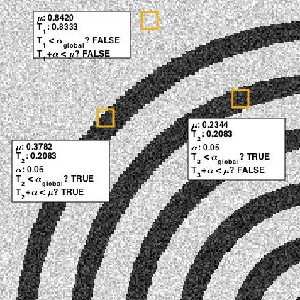

Getting Started: mask¶
I. OVERVIEW
The ‘RP_mask’ analysis creates a binary segmented image from a specified image using a simple local thresholding technique.
In this analysis, each pixel will have an associated window of pixels in all directions - from this, a mean value will be calculated and compared with the pixel of interest. If the pixel is less than the mean value by a set value ‘threshold’ (alpha in figure 1), then the pixel will be labeled as TRUE and assigned as a mask pixel. If a pixel does not meet this condition but has a pixel value lower than a global threshold ‘globthresh’ (alpha_global in figure 1), then the pixel will be assigned as a mask pixel.
Figure 1: Analysis procedure for three different pixels.
II. HOW TO USE
First, open the ‘user_config’ text file in your ‘Root_Processing’ directory. The parameters used in ‘RP_mask’ are in the 4th section, and there will be five parameters. In order, they are:
- image_filename: this is the full image filename (including directory) where the image is to be found.
- output_filename: this is the full image filename (including directory) where the image is to be saved. If the directory is not present, the analysis will automatically make the directory.
- windowsize: this is the size of the window to be analyzed.
- threshold: this is the minimum threshold against which the image-mean value difference will be evaluated.
- globthresh: this is a global threshold value - if the pixel of interest has a value lower than this, then the pixel will be assigned as a mask pixel. This is to avoid an ‘outline’ effect where the center of objects with a size larger than the window will not be mislabeled due to homogenously dark pixel regions (see T 3 in figure 1).
III. RUNNING THE CODE
This analysis can be conducted using the [‘RP_mask’] string in the ‘RP_run’ module.